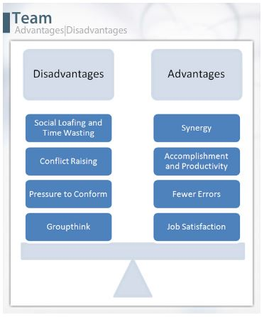

Team Advantages|Disadvantages
Because much of what organizations accomplish is done by groups, it may appear that groups and teams have many advantages. However, the importance of this topic warrants mentioning a few of the disadvantages as well.
First, let’s focus on the positive aspects of teamwork. The first is synergy. Synergy occurs when the group’s total output exceeds the sum of each individual’s contribution. As an individual, you could possibly manage writing a five- to ten-page research paper on any given topic. But if the instructor wants a 20-page paper, imagine how synergistic it would be for a four-person team to write the paper. You can accomplish much more as a team, while each team member is doing the same amount of work as he or she would on a solo five-page paper.
Another advantage is accomplishment and productivity. The achievements and growth of companies such as Apple or Johnson & Johnson are only possible because of group effort.
Teams tend to make fewer errors than individuals do. If you and your classmates are writing a paper together, some classmates may be able to point out errors in grammar, sentence structure, or problems in the overall development that you would not see in your own work.
In addition, teamwork helps to improve overall job satisfaction. Our need for affiliation, security, self-esteem, and fulfillment are often met by teamwork. Being part of a team fosters satisfaction.
Now, let’s talk about the disadvantages of teamwork. The first is social loafing. How does it feel when you are working on a team and it seems like you are doing most of the work? Social loafing is the psychological term for shirking individual responsibility in a group setting. Unless work is assigned carefully to each team member, an under-motivated person can often squeeze by without contributing to his or her fair share of the group work.
Timewasting is another disadvantage of group work. Have you ever been in a meeting where the group members spend the first 15 minutes chitchatting about the weather or the latest news report? Have you ever walked out of a meeting and felt that nothing was accomplished? According to Abigail Johnson, president of Fidelity Employee Services Division, committees are not effective decision makers: “They have tended to be slow and overly risk averse. Even worse, I believe, they can drain an organization of talent, because the group can only be as good as the average” (Kerber, 1998, para. 8).
Another disadvantage of teamwork is when teams raise conflict. At their worst, teams and other groups foster conflict on the job. People within the work group may bicker about doing undesirable tasks or who is doing their fair share of the work.
Also, team members may face pressures to conform to group standards of performance and conduct. For example, you might publically agree with the opinion of other group members even though you actually disagree, simply to avoid conflict.
Finally, groupthink is a strong disadvantage in teamwork. Groupthink is the deterioration of mental efficiency, reality testing, and moral judgment in the interest of group solidarity. Simply put, groupthink is an extreme form of consensus.
Reference:
Kerber, R. (1998, August 1). When committees spell trouble: Don’t let individuals hide within a group. WorkingSmart. Retrieved from
http://www.businessmanagementdaily.com/8046/when-committees-spell-trouble